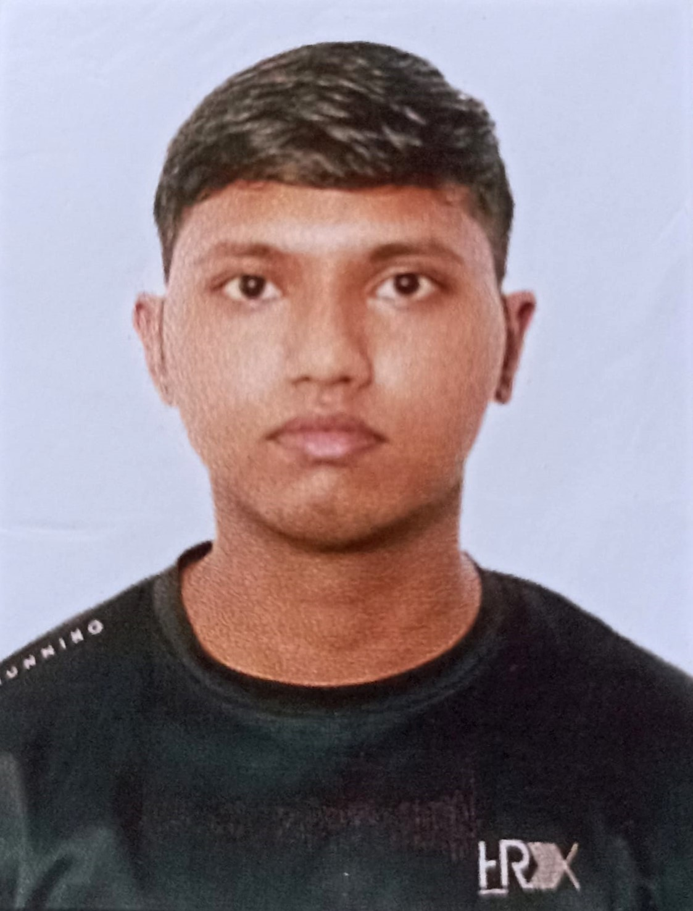

Ritik sharma

summary
I am a hardworking and dedicated individual with experince in human resource management and statistical
analysis.
education
- class 12 with commerce from CBSE
- BA program with mathematics as major from Bhim rao ambedkar college,
University of delhi.
work experience
-
worked as the content head of cultural society of BRAC.
- worked on ideation and execution of college events.
- event planning and event organisation
skills
- python
- microsoft office
- html
others